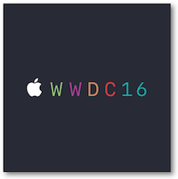
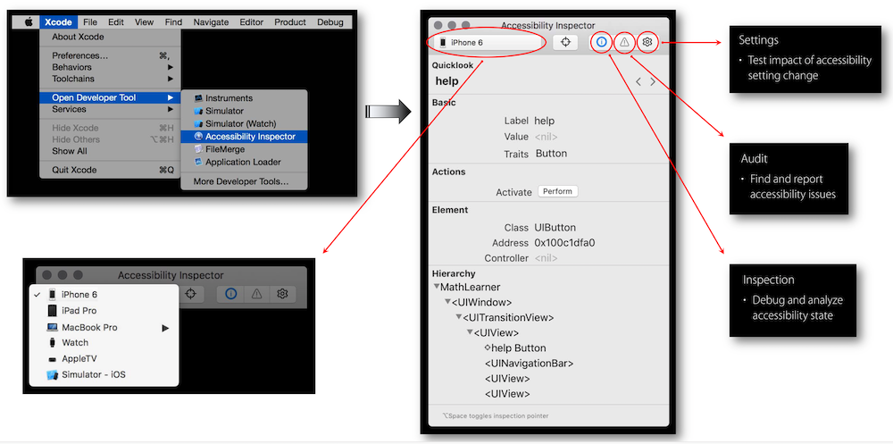
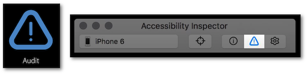
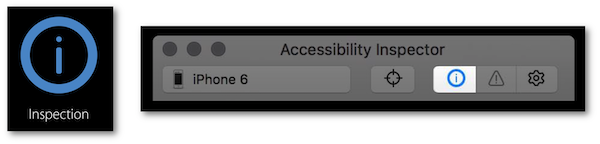
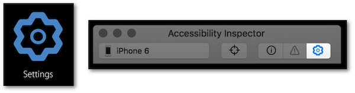

WWDC 2016 : Audit d'une app en accessibilité
Cette présentation visualisable sur le site développeur officiel d'Apple (session 407) a pour but d'expliquer l'outil de développement Accessibility Inspector et comment l'utiliser par le biais d'une application d'exemple très simple.


Les thèmes abordés ainsi que leur référence temporelle au sein de la vidéo sont décrits ci-dessous :
-
Accessibility Inspector (09:38)
-
Audit (11:21)
-
Inspection (20:30)
-
Settings (28:33)
À la fin de cette présentation, il est très fortement recommandé de consulter les nouveautés Xcode 11 de l'outil Accessibilty Inspector de façon à connaître parfaitement la toute dernière version.
Par la suite, le fait de cliquer sur un titre permet d'ouvrir la vidéo de présentation Apple directement au moment indiqué.
Accessibility Inspector (09:38) #
Présentation générale de l'outil en décrivant son contenu ainsi que les différents thèmes autour desquels va s'articuler cette présentation.

La suite va s'attacher à détailler spécifiquement les parties audit, inspection et settings.
Audit (11:21) #
Explications fournies sur l'intérêt et l'utilisation de cette fonctionnalité avec une démonstration par un exemple pratique (12:22) qui permet de mettre en avant la façon de trouver une solution au problème décelé par l'outil (14:24) tout en pouvant remonter rapidement ce problème sous forme de rapport (17:07).

Ce type d'audit automatique est très important mais un audit manuel complémentaire est indispensable car il permet d'éviter des écueils qui pourraient être dévastateurs dans l'utilisation de l'application (18:55).
Inspection (20:30) #
Seconde fonctionnalité expliquée en s'appuyant sur un exemple (21:58) qui peut permettre de déceler différents types de problèmes :
-
ordonnancement chaotique d'éléments dans la navigation, (23:11)
-
description absconse d'un élément, (23:34)
-
action non souhaitée déclenchée par un élément. (24:02)
Lors de la visualisation de la hiérarchie des éléments par cette fonctionnalité (24:40), il est précisé que les composants gérés par CALayer ne sont pas traités nativement par VoiceOver.

Settings (28:33) #
Dernière fonctionnalité de l'outil qui permet d'éviter des allers-retours entre l'application testée et les modifications des principaux réglages d'accessibilité qu'une démonstration met en évidence (30:25).
